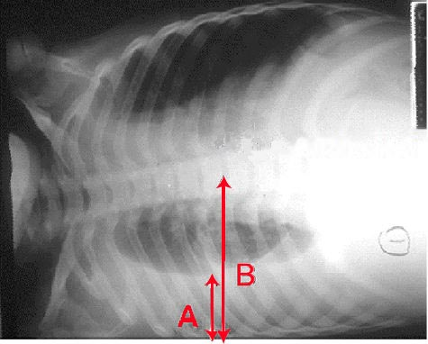

Ficha del catálogo
Derrame pleural
- Sistema
- Respiratorio
- Modalidad
- RX
- Región
- Tórax
- Dificultad
- Básico
Acumulación anormal de líquido en el espacio pleural. Puede deberse a insuficiencia cardiaca, infección, neoplasia, embolia pulmonar o enfermedades sistémicas, y su reconocimiento radiológico es sencillo cuando el volumen es suficiente.
Técnica
Radiografía posteroanterior en bipedestación, donde el líquido se deposita en las zonas declives por efecto de la gravedad. La proyección en decúbito lateral sobre el lado afecto demuestra si el líquido es libre o está tabicado.
Qué observar
- Borramiento del ángulo costofrénico, que es el signo más precoz en bipedestación
- Opacidad homogénea de base pleural con un borde superior cóncavo (menisco o curva de Damoiseau)
- Ausencia de broncograma aéreo, a diferencia de la consolidación neumónica
- Desplazamiento del mediastino hacia el lado contrario en derrames masivos
- En decúbito, el líquido se extiende en capa y produce un velamiento difuso de todo el hemitórax
- Derrame subpulmonar, que simula una elevación del hemidiafragma
Hallazgos
Opacidad de base pleural con borramiento del ángulo costofrénico y borde superior cóncavo, característica de derrame pleural.
Perlas
Se necesitan unos 200-250 ml de líquido para borrar el ángulo costofrénico en la proyección posteroanterior, pero bastan unos 50 ml para verlo en la lateral, donde el seno costofrénico posterior es más profundo. Por eso la lateral detecta derrames pequeños que la frontal no muestra.
Diagnóstico diferencial
- Consolidación neumónica basal
- Presenta broncograma aéreo y no desplaza el mediastino, mientras que el derrame es homogéneo, sin broncograma y con borde superior cóncavo.
- Atelectasia del lóbulo inferior
- Hay pérdida de volumen con desviación del mediastino y elevación diafragmática hacia el lado opaco, al contrario que en el derrame voluminoso.
- Engrosamiento pleural crónico o fibrotórax
- La opacidad es fija, de contorno irregular, no se modifica con los cambios de posición y suele asociarse a retracción del hemitórax.
- Elevación diafragmática
- El contorno es liso y convexo hacia arriba con gas gástrico o colónico justo por debajo, mientras que el derrame subpulmonar la simula pero desplaza el vértice diafragmático hacia lateral.
- Masa o tumor pleural
- Forma opacidades nodulares de base pleural con ángulos obtusos respecto a la pared, a veces circunferenciales, y no se desplaza con la gravedad.
- Hemotórax
- El aspecto radiológico es el de un derrame, pero el contexto traumático y la mayor densidad medida en tomografía orientan al contenido hemático.
Simuladores
- En decúbito el líquido se reparte en capa posterior y produce un velamiento difuso del hemitórax con trama vascular visible a través, que puede leerse erróneamente como consolidación.
- El derrame subpulmonar simula una elevación del hemidiafragma; la pista es el desplazamiento lateral del punto más alto de la curva y el aumento de la distancia entre la cámara gástrica y el pulmón.
- La grasa extrapleural y el engrosamiento pleural antiguo crean bandas de densidad estables que no cambian entre estudios ni con la posición.
- El derrame cisural encapsulado adopta forma lenticular de bordes bien definidos y se confunde con una masa, de ahí el nombre de tumor evanescente, ya que desaparece al tratar la causa.
Por modalidad
- RX
- Detecta el derrame a partir de cierto volumen y permite estimar su magnitud y el seguimiento; la proyección lateral es más sensible que la frontal.
- US
- Es la técnica más sensible y práctica: Cuantifica volúmenes pequeños, distingue líquido libre de tabicado y guía la toracocentesis con seguridad.
- TC
- Caracteriza el líquido, detecta engrosamiento y nodularidad pleural sugestivos de malignidad, diferencia empiema de absceso y descubre la causa.
- RM
- Uso puntual para valorar invasión de la pared torácica y del diafragma en tumores pleurales.
Protocolo
Radiografía posteroanterior y lateral en bipedestación, que aprovecha la gravedad para acumular el líquido en los senos costofrénicos. La proyección en decúbito lateral sobre el lado afectado con haz horizontal demuestra si el líquido es libre, porque se desplaza y forma una capa a lo largo de la pared. El ultrasonido se realiza con el paciente sentado, transductor convexo o lineal en los espacios intercostales de la región posterolateral, valorando el diafragma como referencia; para la toracocentesis se marca el punto por encima del borde superior de la costilla inferior. La tomografía se adquiere con contraste intravenoso cuando se sospecha empiema o afectación tumoral.
Clasificación
El derrame se clasifica primero en trasudado o exudado, distinción bioquímica que se apoya en los criterios de Light y que determina el enfoque diagnóstico. En el contexto infeccioso se gradúa en derrame paraneumónico simple, complicado y empiema, según las características del líquido y la presencia de tabiques, lo que decide si basta el tratamiento médico o se requiere drenaje. Por su volumen se describe como escaso, moderado o masivo, considerando masivo el que ocupa todo el hemitórax y desplaza el mediastino.
Errores frecuentes
- Descartar derrame por una proyección frontal normal, cuando la lateral detecta volúmenes mucho menores y el ultrasonido todavía menores.
- Confundir un derrame subpulmonar con elevación del hemidiafragma.
- No advertir que un derrame masivo sin desplazamiento del mediastino sugiere obstrucción bronquial o pulmón atrapado, hallazgo de alarma.
- Realizar una toracocentesis guiada solo por la radiografía sin comprobar con ultrasonido si el líquido está tabicado y cuál es el punto seguro.

derrame pleura liquido menisco costofrenico torax damoiseau